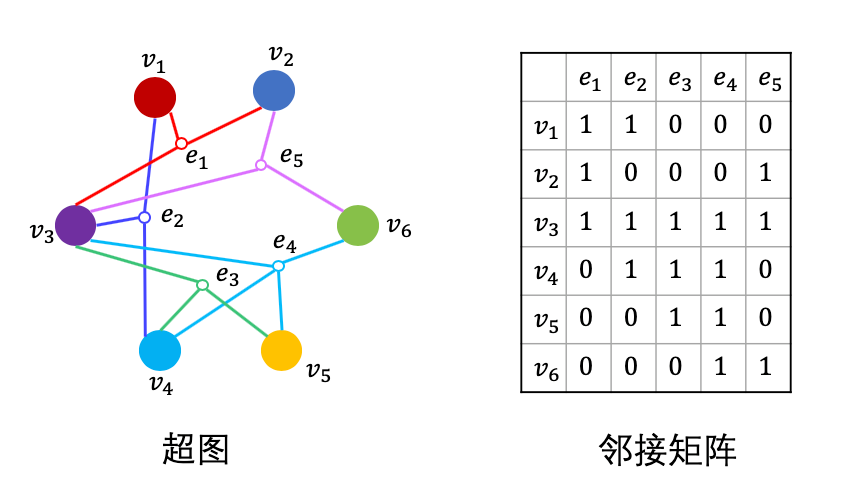
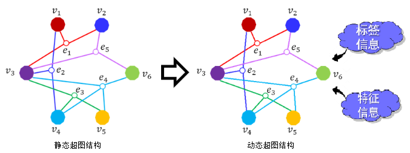
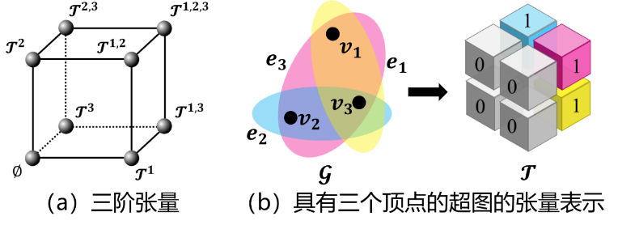
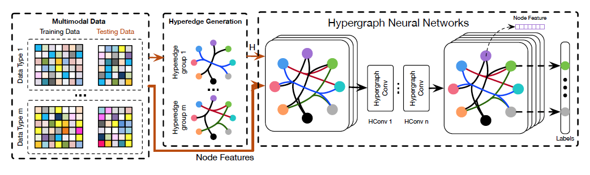
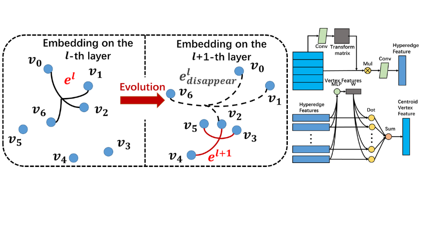
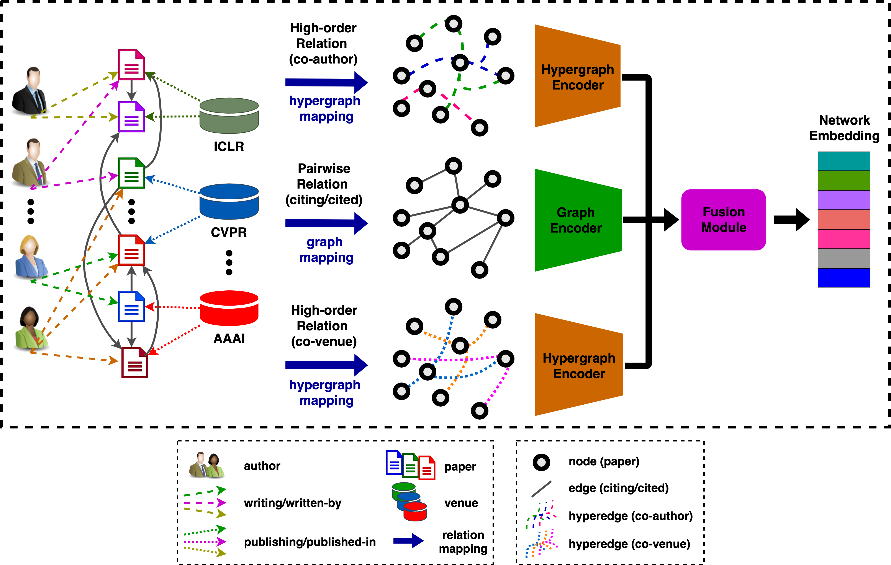
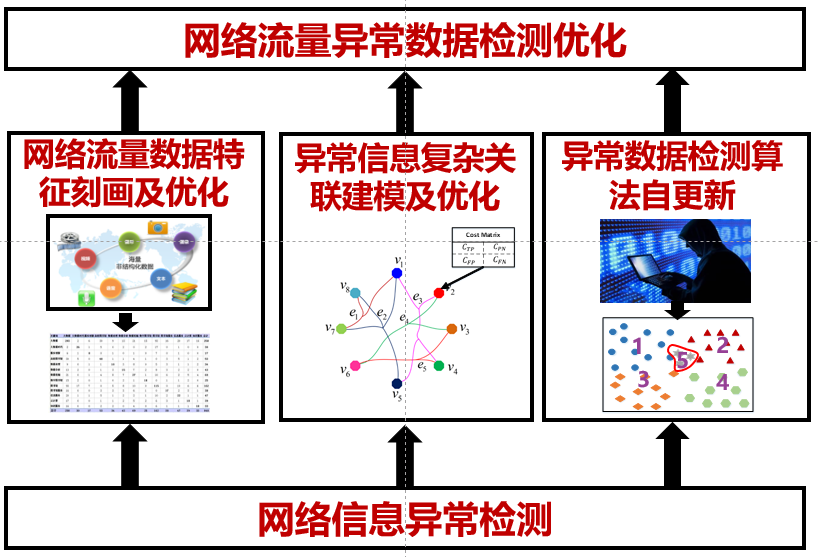
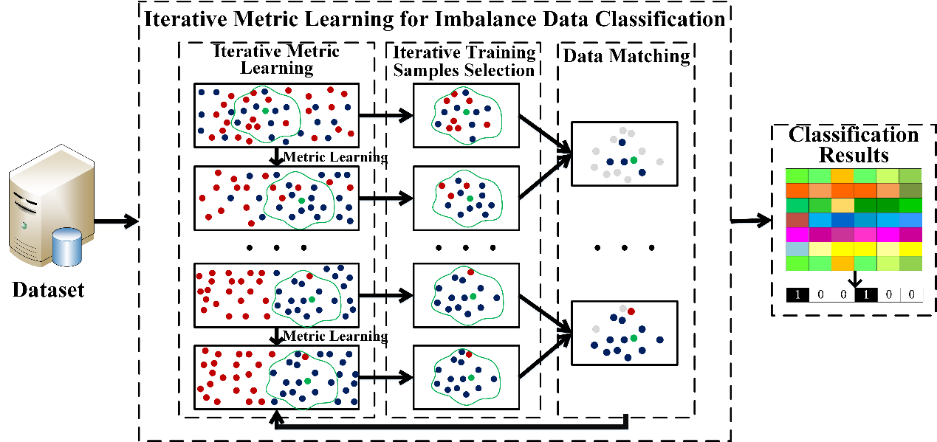
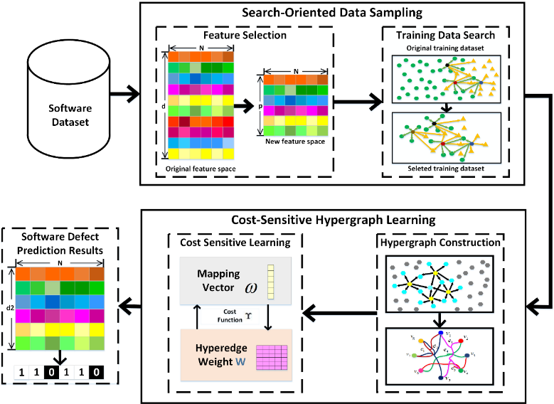

复杂网络¶
数据复杂关联建模和表征在许多应用中起到重要作用，比如社交数据分析、分类任务、医疗数据分析等等。我们主要研究基于图和超图的学习、超图神经网络、多模态数据融合、度量学习等方法，并在视觉分类、软件缺陷预测、社交媒体数据过滤和推荐等场景进行应用。图用于表示实体与实体之间的关系，一张图由一些节点和连接节点的边组成。我们常见的互联网、人际关系都可以表示为图。简单图结构中一条“边”最多连接两个节点，而超图结构中“超边”能够连接任意多个节点。这种设定使得超图能建模更复杂的数据关联。当面对多个节点拥有同一属性的时候，普通图只能通过多条边将他们连接在一起，而超图结构仅用一条超边就将它们连接在一起。相比于简单图和其它线性方法，超图模型可以构建出数据的高阶关联。
由于超图具有建模复杂关联数据的优势，超图学习在近年来备受关注并在图像检索、物体分类、图像分割、多媒体推荐和视觉追踪等任务上得到广泛的应用。
超图结构学习模型¶
邻接矩阵是图表示的常用方法。简单图的邻接矩阵是一个固定的N * N的矩阵，超图的邻接矩阵是一个N*E的矩阵，其中N是节点个数，E是超边的个数，E的数量由数据决定，具有动态性。在处理多模态数据时，超图具有很好的可拓展性，可以通过拼接不同模态的超图邻接矩阵而达到多模态融合的目的。这些优点都是普通图结构所不具备的，也是超图结构学习的基础。
动态学习¶
在社交网络分析、3D对象检索、手势识别等领域中，往往存在数据复杂关联建模难题。针对这一难题，我们以超图结构作为数据复杂关联建模基础，研究超图结构的动态更新方法，实现自适应非线性数据建模及相似性计算。不同于传统的静态超图学习方法，我们在学习数据标签投影矩阵的同时同步学习超图结构。这种动态超图结构可以更好地反映复杂数据的相关性，具有更佳的数据适应性，同步得到的标签投影矩阵在分类及检索等任务上也能获得更佳的性能。
张量表示¶
在已有的工作中，超图往往通过邻接矩阵表示。当超图结构在动态演变时，其超边数和超边权重是在不断变化的，邻接矩阵并不能很好地表示超图结构的动态更新。针对这个问题，我们提出了超图结构的张量表示，来构建数据的完全阶关联，并提出了基于张量表示的动态超图学习算法，与已有方法相比，该模型的目标函数是双凸的，可以通过交替迭代算法有效求得最优解。我们在四个数据集上进行了实验，结果证明我们的方法可以有效提高准确率，同时将速度提升1700多倍。
论文列表¶
Z. Zhang, H. Lin, and Y. Gao. Dynamic Hypergraph Structure Learning. In Proceedings of International Joint Conference on Artificial Intelligence, pages 3162–3169. International Joint Conferences on Artificial Intelligence Organization,7 2018.
基于张量的超图结构 Hypergraph Structure With Tensor¶
在这个工作中，我们引入张量来表示超图结构，相较于传统的邻接矩阵，这种表示方法更加灵活简便。此外，我们提出了基于张量表示的超图学习方法，同时预测数据标签并更新超图结构，在四个数据集上的实验结果都表明了方法的有效性。
超图神经网络模型¶
超图神经网络同时结合了超图结构优秀的建模能力和神经网络强大的学习能力，在处理图结构数据特别是复杂关联的结构数据的时候有着极大的优势。超图神经网络能够建模普通卷积神经网络无法处理的非结构化数据以及图神经网络无法处理的非成对连接的节点数据。并且由于超图结构的可拓展性，超图神经网络也是一种处理多模态数据的最有效的方法之一。
近年来，超图神经网络在社交网络分析，脑科学，情感计算，医疗数据分析，可视化数据分类，引用网络分析，蛋白质结构分析，药物结构生成，知识图谱链路预测，推荐系统等领域都有着广泛的应用。
HGNN¶
如今卷积神经网络在视觉任务上有着广泛的应用，然而卷积神经网络只能处理结构化的数据如图片，视频等，针对非机构化数据并不能体现出其优势。现实生活中充斥着大量的非结构化的数据如：社交网络，通信网络，知识图谱，蛋白质结构，药物分子结构等复杂的图结构数据。图卷积神经网络只能处理由一个边连接两个点构成的简单图，并不能处理复杂关联的超图结构如：一个超边连接多个节点。
我们针对复杂数据的表示学习提出了超图神经网络（HGNN）的框架，这种架构可以使用超图结构编码高维数据关联。超图结构相比结构化数据表示和传统图结构能更灵活的建模数据关联，特别是复杂的高阶数据关联。为了在超图学习中解决数据复杂关联的问题，我们设计了超边卷积操作。相比传统的超图学习方法，超边卷积的运算更高效。
超图神经网络是一个更普适的框架，能够在高维数据结构中学习到数据隐藏层的表示。我们在引用网络节点分类和可视物体识别两个任务中分别对比了图卷积网络和其他的传统方法。实验结果证明了我们提出的方法比现有最好的方法有更优秀的性能。我们同样在处理多模态的数据任务上做了实验，结果表明HGNN在面对复杂数据关联特别是多模态数据的时候有着非常显著的优势，在Modelnet40数据上有3%的分类性能提升。
DHGNN¶
针对现有的超图神经网络模型难以很好地挖掘和建模数据中的隐式高阶关联的问题，我们提出了动态超图卷积网络。该网络在每一层会从特征空间中动态建立超图结构，并基于动态超图结构提出了由节点卷积和超边卷积构成的超图卷积用于更好地利用超图结构进行特征传播。该网络在引用文献网络中的文本分类任务和多模态社交媒体数据的情感预测上分别取得了平均0.4%和1.8%的精度提升，并在第二个任务上的训练速度上相当于当前精度最高方法取得了2300倍的速度提升。
面向多级关系建模的混合图结构模型¶
多级关系（Multi-level Relation）广泛存在于现实网络（Network）中，这些多级关系表现为节点（Node）之间存在的低阶对偶关系（Low-order Pairwise Relation）和高阶复杂关系（High-order Complex Relation）。例如，在一个引文网络（Citation Network）中，论文（Paper）之间既存在低阶的相互引用关系（citing/cited），也存在着不同类型的高阶复杂关系，比如，不同论文之间共享的共同作者（co-author）关系和共同出版社（co-venue）关系。然而，现有的网络表示学习（Representation Learning）方法只考虑了网络中节点之间的低阶关系，而忽略了这些潜在的高阶关系。为此，我们提出了一种混合图结构模型（Heterogeneous Graph Structure Model），用来对多级关系同时进行建模。
网络安全态势感知¶
目前针对网络流量数据中异常数据的检测，现有的检测方法，主要包括固定规则设定，黑白名单过滤以及专家人工检测等方模式，存在着大量误判和判别时间长，难以检测未知类型异常数据以及难以应对零日漏洞等问题。针对网络流量增大，数据复杂度增高的新环境新要求，急需可靠高效的数据驱动异常检测方法。为了进一步提高检测的准确性，可靠性以及实时性，我们有针对性的提出基于网络数据的特征表示优化以及特征关系挖掘。
特征表示¶
网络流量数据种类繁多，数据量庞大，以及数据不平衡，这也是数据普遍存在的特征，所以我们要实现数据特征刻画的同时进一步实现特征优化。其下包括两个主要攻克点，针对工业互联网中存在的非结构化数据以及结构化数据，我们分别提取特征，根据信息检测需求，进行信息融合，得到融合数据特征。为了进一步解决数据不平衡及冗余现象，对数据特征进行优化，获得稳定近邻空间，减少数据冗余度，提高检测准确率。随着网络向制造业的渗透，大量网络数据采集频率显著提升，采集范围不断扩大 ，数据的复杂度也逐渐增高，且网络中的数据大多为非结构化数据，其格式多种多样，遵守的协议也各不相同，相对于结构化信息更难标准化和理解。所以急需对网络流量数据进行特征刻画及优化。
首先针对网络流量数据的优化，我们提出迭代度量学习，利用迭代度量学习构建数据空间框架，对数据空间进行转换，使相同类别数据接近，不同类别数据分离，提高数据质量。以此来提高数据空间的合理性，提高检测率降低误检率。与此同时，降低检测空间维度，减小冗余数据，提高检测速率，降低计算量负担。实现网络流量数据有针对性的刻画和特征提取。
特征关系挖掘¶
由于目前网络数据中存在大量的结构化和非结构化数据，其之间关系难以利用普通的固定规则设定来进行识别。利用传统常用方法难以挖掘高阶信息，缺乏对关键异常信息的识别关注度。针对网络流量数据之间存在的复杂关联，我们利用超图结构挖掘数据中的高阶关联关系。由于网络环境异常数据的特殊性，我们在检测过程中增加对异常数据的敏感性，从而构建代价敏感的超图结构，增强系统对异常数据检测的鲁棒性。考虑到真实生产环境下可能存在尚未记录的未知异常数据，其存在对系统的正常运行产生严重的安全隐患。我们进一步利用聚类方法以及离散树算法计算每个数据的权重，利用得到的总权重以及超图模型构建数据之间的复杂关联，并在学习过程中针对不同样例的权重进行调节，从而对异常数据进行识别。
